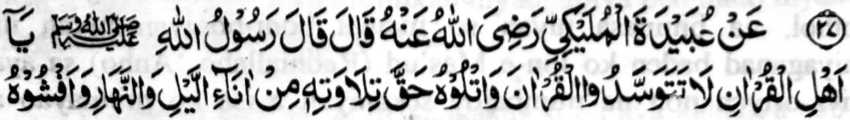
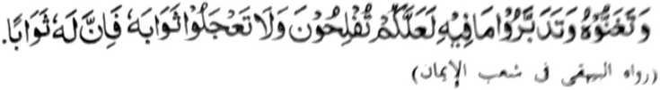
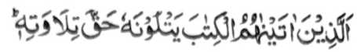
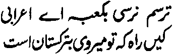
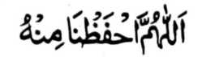

Hadith - 27


Miyakathitayan ko Ubaidah Mulaikie (Radhiallaho ‘Anho) a pitharo iyan a pitharo o Rasulollah (Sallallaho ‘Alaihi Wasallam), “Hay so bigan ko Qur'an! Di niyo mbaloya so Qur'an a olona, go batiya-a niyo ko okil a kabatiya-aon ko manga kagagawi-i ago so manga kada-daondao. Go panolonen niyo sekaniyan ago batiya-a niyo ko mapiya a lago go pamimikirana niyo so madadalemon ka angkano thagompiya. Go oba kano mbabanog sa balas (sangka-iya donya) ka aden a mala a balas iyan [sa Alongan a Maori]. ”
Kati-i so saba-ad ko zaboten sangka-iya Hadith:
1. So da kapakay o ba oloni so Qur’an na dowa a Mafhoom (pekhasabot ton): Paganay ron na so kathato sa di khapakay o ba oloni so Qur’an na sabap ko giyanan na makasosopak ko pada-adat o kabatiya ko Qur’am. Pitharo o Ibn-e-Hajar (Rahmatullahi ‘Alaihi) a so kaoloni ko Qur’an, so kadaseli ron, go so kadapo-i ron, go so katalikhodi ron na manga ola-ola a inisapar. Ika dowa na so katharo a ‘baloin a olona’ na isa mitotoro iyan na so kindarainonen ko Qur’an. Daden a kipantag iyan ko kibatogen non ko olona, go lagid o gi-i nggola-ola-an o manga tao ko saba-ad a manga darepa a ibabatog sa lihar ko kilid o qobor a ni-at sa katago-i ron sa barakah. Giya-i pithamanan a di kasiyapa ko Soti a Kitab. Kabenar reketano o Qur’an so kabatiya-a on.
2. So katharo a ‘batiya-a niyo ko okit a kabatiya-a on’ na aya ma-ana niyan na mbatiya-an si-i ko pithamanan o pada-adat. Giyangka-iya a sogo-an na si-i den mapapadalem ko Qur’an:

So siran noto a inibegay Ami kiran so Kitab (a Qur’an] a pephangadi-t ran ko ontol a kapangadi-i ron ... [Surah Al-Baqarah:121]
3. So katharo a ‘Panolonen niyo so Qur’an’ na aya ma-ana niyan na ipenggolalan tano to a mokit sa katharo, o di na kazorat, o di na pangangapin, o di na kinggolalanen non, o di apiya antona-a a okit a khaparo.
So Rasulollah (Sallallaho ‘Alaihi Wasallam) na inipaliyogat iyan so kipanolonen ago kapakalangkap, ogaid na so saba-ad ko manga mamponay tano sa pamikiran na inibetad iran sa ilang a galebek, go sarta a tatarima-an niran a mala siran-i babaya ko Rasulollah (Sallallaho ‘Alaihi Wasallam) ago so Islam.
Pitharo o satiman a bayok a taga Persia:

Pekhalek ako, hay sakatao a Badawe! Ka o ba ka baden di mira-ot sa Ka-abah sabap sa aya titindegan kana so lalan a ipezongsa Turkistan.
So Rasulollah (Sallallaho ‘Alaihi Wasallam) na inisogo iyan so kapakadaya-manga ko Qur’an, ogaid na di bo malebod a kapephanago-i tano sa pimbarang a pangalang so kapephakalangkapa on. Pephangemba-al tano sa manga bitikan ko kapaganad sa kata-o ko okit a so manga wata tano, saliyo ko kasowa-a iran ko Qur’an, na initegel kiran so kitapi ko manga iskowila. Di tano masoso-at ko manga goro sa Madrasah ko [pangandam tano sa] kabinasa-a iran ko kapagintao o manga wata tano, giyoto-i sabap n di tano kiran phakasongen so manga wata tano. Apiya giyangka-iya pangandam na aden n kabebenar iyan, ogaid na kena ha ini phakasaliyo ko atas-tanggongan tano kiran. Aya liyo si-i na so atas-tanggongan tano na baden miyagomareg, sabap sa paliyogat reketano so kipanolonen ko Qur’an, melagid si-i ko pithnnggisa-an o di na so kalangowan tano. So manga goro na dosa iran so di ran kaphaka-tarotop, ogaid na o aya sabap a di tano kaphakasonga ko manga wata tano sa Madrasah na kagiya di siran makatatarotop, sa aya baden a matomo tano na so manga pando-an a pho-on ko manga iskowila-an a giyanan-i khasabapan sa kitegelen ko manga wata tano a kindarainonen niran ko kaphaganada iran ko Qur’an, na miyaka-ibarat sa kapembono-a tano ko gi-i merayor sa kapembegi tano ron sa doti. So kipenda-owa-an tano ko di kapaka-tatarotop o manga goro na mababao a dalina, na giyangka-iya da-owa na daden a kipantag iyan ko Kokoman o Allah. Khapakay a ipangenda-o tano ko manga wata tano so manga phaganaden sa iskowila-an lagid o kata-o sa kapagitong, pantag bo sa kabaloy ran a khapakayan thinda o di na kapakakowa iran sa galebek ko pangadapan ko parinta, ogaid na so Allah na pitharo Iyan a so kapaganada ko Qur’an na aya lebi a mala-i gona.
4. So kabatiya na nggolalan sa mapiya lago na miya-aloy dena-i ko miya-ipos a Hadith.
5. Inipaliyogat reketano so kapephamimikirana tano ko ma-ana o Qur’an. Aden a katharo pho-on ko Taurat a misosorat ko kitab a ‘Ihya’ a pitharo o Allah, “Hay Oripen Aken! Ba ka di khaya ko ola-ola ngka Raken? O maka-kowa ka sa sorat pho-on ko ginawa-i ngka ko masa a phelalakao ka ko lalan na thareg ka den na phangiloba ka sa mapiya a darepa na mbatiya-an kaon sa tanto ka a tatandingan sa mapiya pamakineg ka-an ka masabot so pithanggisa-an a katharo a madadalemon. Ogaid na so Kitab Aken, a o-osain Aken non so langowan taman ago lalayon Aken gi-i khaso-kasoin mamagosay so langon o manga ala-i kipantag a nganin, ka-an ka mapcphamimikiran ago masabot, na lagid o di ngka i enengka-an. Ba aya kibebetaden ka Raken na mababa a di so bolayoka aka? Hay Oripen Aken! So saba-ad ko manga bolayoka aka na phagobay reka ago gi-i reka makimbitiyara-i, na tanto ngka siran a pephamamakinegen. Gi-i ngka siran gi-i pamamakinegen ago pephanamaran ka a kasaboti ngka kiran. O aden a zarebak na pezaparan ka sa nggolalan sa siniyas. Gi-i Ako reka makimbitiyara-i a nggolalan ko Kitab Aken, ogaid na di ka phamamakineg. Ba aya katawi ngka Raken na mababa a di so manga ginawa-i ngka?” So kalbihan o kapamimikiran ago so kindalen-dalemen ko matatago ko Qur’an na andang den a miya-aloy si-i ko Pamekasan angka-iya kitab ago si-i pen ko Hadith a ika 8.
6. So katharo a “oba ka mbabanog sa sokay” na aya ma-ana niyan na di khapakay so kakowa sa sokay sabap ko kabatiya sa Qur’an sabap sa so kapembatiya-aon na aden a khakowa ngkaon a mala a balas ko Akhirat.
So kakowa sa balas pantag on sangka-iya donya na lagid o kaso-at ko kapakakowa sa lokhabang a di so kapakakowa sa pirak. So Rasulollah (Sallallaho ‘Alaihi Wasallam) na pitharo iyan, “Anda den-i kapemasela-a o manga Ummat aken ko pirak na khada kiran so bantogan o Islam a inibegay niyan kiran, na amay ka itareg iran so kisogo-on ko mapiya ago so kisaparen ko marata na mapapas kiran so kapiya o Initoron [ma-ana so kata-o ko Qur’an].

Ya Allah! na pakalidasa kami Ngka si-i